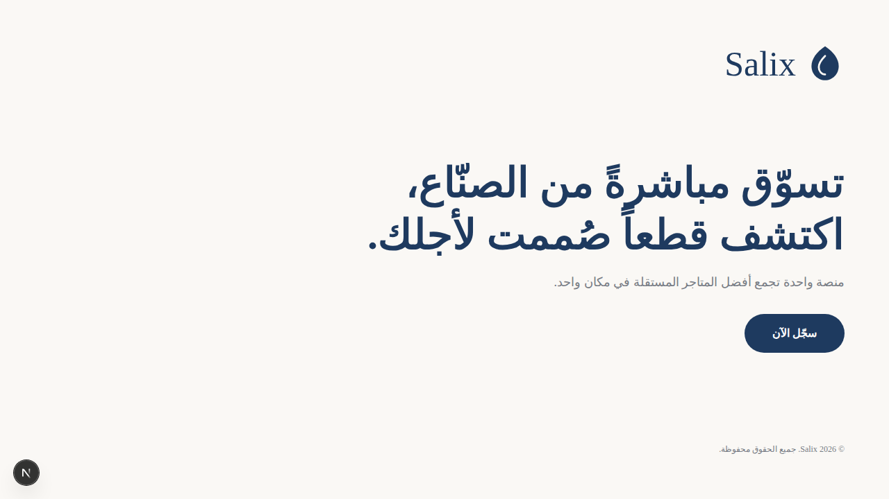
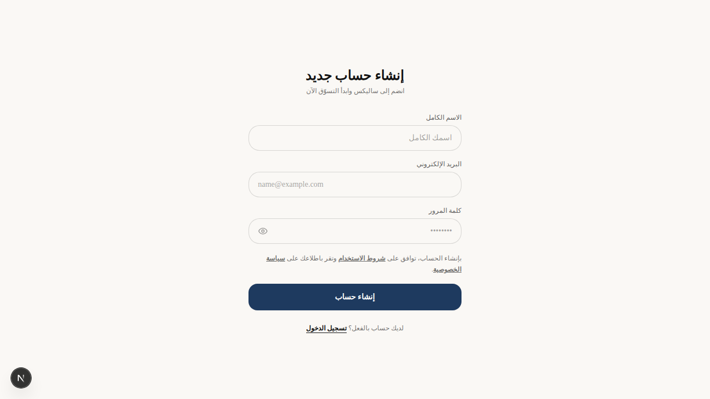
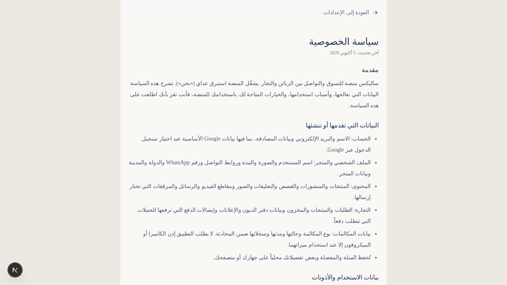

ترحيب وتسجيل، تصفح التصنيفات، البحث، تفاصيل المنتج، السلة، الطلبات، الملف الشخصي والمفضلة.
Silexسوقنا — تطبيق سوق اجتماعي عربي
العودة إلى برق اليوم ↗تطبيق منفذ بيد استبرق ناجي
سوق عربي يجمع الزبون والتاجر في مكان واحد.
تطبيق Silex، ويظهر في الواجهة باسم Salix، هو تجربة سوق اجتماعي عربية باتجاه RTL كامل: اكتشاف المنتجات، متابعة المتاجر، الطلب، المحادثة، القصص والإشعارات ضمن تجربة واحدة.
فتح ملفات المشروع والتعليمات ↗
01 — الفكرة
منصة تجارة اجتماعية وليست صفحة عرض فقط
المشروع مبني كتطبيق حقيقي متعدد الشاشات، مع مسارات للزبون والتاجر ولوحة الإدارة. النسخة الحالية تحتوي على واجهات واسعة وتدفقات أساسية، بينما تحتاج بعض الوظائف الخلفية إلى إعداد Supabase وبيانات بيئة قبل التشغيل الإنتاجي.
إعداد المتجر، إدارة المنتجات، المخزون، الطلبات، القصص، الإعلانات ومساعد متجر محلي قائم على قواعد عربية.
منشورات وتعليقات، متابعة المتاجر، محادثات، مكالمات، قصص، إشعارات داخلية ودعم Push اختياري.
لوحة إدارة للمستخدمين والتجار والمنتجات والطلبات والحملات والإشعارات والتقارير وتحليلات الاستخدام.
الواجهات عربية من البداية مع مسارات واضحة وسياسة خصوصية وشروط استخدام وصفحات حذف الحساب.
يتضمن إعداد Capacitor لإضافة Android ومزامنة المشروع مع طبقة الهاتف لاحقًا.
02 — الأدوات
الـStack المستخدم
Next.js 15React 18TypeScriptTailwind CSSSupabaseTanStack QueryCapacitor AndroidPlaywrightAgora RTCOneSignalRechartsExcelJS / jsPDF
هذه الأدوات مستخرجة من ملفات المشروع نفسه. لا توجد مفاتيح إنتاج داخل النسخة المرفوعة، لذلك أبقيت تكاملات Supabase والإشعارات والدفع كأجزاء تحتاج إعداد البيئة قبل النشر.
03 — لقطات حقيقية
من الواجهة التي تعمل الآن
هذه اللقطات التُقطت من تشغيل محلي للمشروع بقيم معاينة فقط، وليست صورًا مولدة أو Mockups. لم أستخدم حسابًا حقيقيًا أو مفاتيح إنتاج.


